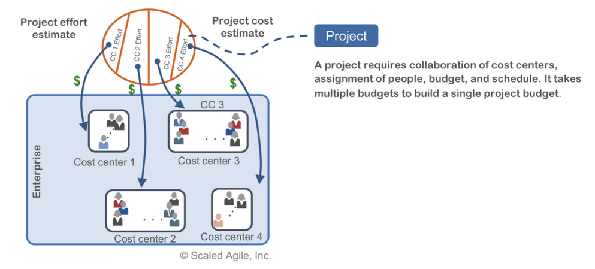

Target IT Solution Delivery Model Strategy - Explained
The Strategy: see here for the strategy that this areas of concern document refers to
Change Log
| Version | Date of Change | Change Description |
|---|---|---|
| 0.1 | 2020-06-02 | First draft |
Table of Content
- 1. Document Purpose
- 2. Strategic Context
- 3. Problem Statements
- 3.1. IT Projects health does not measure business value
- 3.2. Labour-intensive IT Project creation process acts as a deterrent for change
- 3.3. Functional organization structures create siloes and territorial behaviours
- 3.4. Functional organization structures hinder capacity planning
- 3.5. Governance layers impede innovation and produce cost of delays
- 3.6. Manual Audit processes (compliance) impede innovation and create cost of delays
- 3.7. Technology deployments take too long to reach production
- 3.8. Lack of business commitments impedes problem solving during project execution
- 3.9. IT teams do not have authority over their own budgets, leading to accumulation of technical debt and cost of delays
- 3.10. Manual data collection leads to inadequate insights to IT Product’s health
- 3.11. Difficulties to experiment and insufficient SOLUTION architectural authority leads to sticking with what we know
1. Document Purpose
This document seeks to explain, in non-policy and non-planning language, the problems that the Target IT Solution Delivery Model strategy intends to solve.
It will do so by:
- Providing a strategic context to situate the reader
- Providing a list of problem statements and how the strategy intends to solve them
2. Strategic Context
This section situates the purpose of the strategy within the digital government environment, that is within an environment that seeks to reconcile user needs, agility, and an enterprise view of technology investments.
The scope of this strategy is IT Solution Delivery. Not asset management, vendor sourcing, workforce and talent management, or enterprise capability-based planning.
2.1. Where are we now?
As stated in the 2019-2020 Departmental Plan, ESDC commits to “continue to transform the delivery of its services to ensure they meet the evolving expectations of Canadians”. Due to ESDC’s citizen-focus mandate, it is heavily engaged in government-wide digital operation actions. For example, the OneGC vision and Omni Channel Digital Strategy contains 14 cluster groups where ESDC either leads or is an active participant in each one.
Internally within ESDC, the Innovation, Information and Technology Branch (IITB) established the IITB Way Forward, containing 26 service improvement and modernization activities to improve its Information Management/Information Technology (IM/IT) service offerings.
ESDC is not a new department. It has accumulated a significant amount of technical debt over its decades. ESDC’s application portfolio contains more than 500 applications, 101 of which are mission critical and depend on legacy technologies (aged custom build applications and a mainframe). In response to limitations of the antiquated IT systems, ESDC has started investing in a Business Delivery Modernization Programme. This Programme targets a complete business process and technology renewal for Employment Insurance, Old Age Security and the Canada Pension Plan.
Most of the recommendations from external audits on reducing risks to technology investments seem to be about stronger, more disciplined governance. That having a more accurate prediction of the future is the key to reducing risks on technology investments.
The ESDC IT Strategy team disagrees.
To work effectively in the digital world, you must first accept complexity and uncertainty, for they demand very different approach to carrying out initiatives. A predictable world rewards advanced planning and rigid plan execution. But a complex and uncertain world rewards an empirical cycle of trying, observing, and correcting.1
2.2. Where do we want to be?
Same day software deployments are possible and a common practice at ESDC.
The benefits to frequent small deployments, using automated methods, are expected to reduce risk2, reduce technical debt, increase client satisfaction, and increase overall confidence in the department and its staff.
2.3. What has triggered the need for change?
With the move towards Digital, the mission of Employment and Social Development Canada (ESDC) is now heavily influenced by the strategic use of technology in delivering services to Canadians. This because government in the digital era is ultimately about a reset of the relationship between policy, delivery, and evaluation.
Because of the ubiquitous nature of technology in digital solutions, this reset of relationship includes the use of technology. The feedback loop between policy makers and users needs to accelerate, which will greatly depend on how fast technology can respond to such change without increasing the level of risk to the department.
The GC Digital Standards form the foundation of the government’s shift to becoming more agile, open, and user-focused. At the same time, the Directive on Service and Digital requires departments to align to the GC Architecture Standards by means of its mandatory procedures for Enterprise Architecture Assessment. This creates a conundrum for organizations:
How do we reconcile the requirement of being agile with the one of thinking Enterprise?
The recent COVID-19 pandemic crisis has showed that public servants can be trusted to make decisions and that they deserve more autonomy to make changes.
3. Problem Statements
3.1. IT Projects health does not measure business value
3.1.1. Problem Description
A Project is a temporary endeavour undertaken to create a unique product, service, or result3. An IT Project is about a software product to enhance business operations service or results. Whether or not the result proved to be positive is currently not part of the IT Project’s health measurement.
IT Projects health is currently measured by costs, schedule, and scope. The health is adjusted over time on whether the IT Project is within those pre-agreed, estimated, indicators or not. The health can only be modified via change requests where a health that was originally red (bad) can move to green (good) if stakeholders agree the original estimates can be modified to reflect reality.
The larger the IT Project is, the longer the business operations need to wait for the results expected of that IT Project to materialize. And as such, the longer it is for the organization to determine whether or not the investment was worthwhile.
A Business case (an idea for an investment) needs to be treated as a hypothesis, validated only when it reached end-users.
3.1.2. How the strategy intends to solve the problem
- Mandate a size limit to IT Projects, as a means to accelerate the business realization and treat IT Projects as the iteration step for an agile organization
- Mandate IT Project scope to produce production-ready IT Products at minimum every 6 months. Otherwise the scope is to large and must be reviewed
- Simplify IT project reporting to focus on value over time (development value stream KPI), less on original estimates adherence
- Simplify IT Project creation (See problem statement #3.2)
3.2. Labour-intensive IT Project creation process acts as a deterrent for change
3.2.1. Problem Description
Creating an IT Project requires intensive labour work which produces an unintended consequence: acting as a deterrent for change.
To create an IT Project, the project sponsor is required to produce a Project Management Plan (PMP) which expects the following series of subsidiary plans (non-exhaustive list):
- Scope Management Plan
- Schedule Management Plan
- Cost Management Plan
- Resource Management Plan
- Quality Management Plan
Most software work will be new (i.e. not under run costs) as software evolves over time, adjusting to end-user’s behaviours, the market, and ongoing business change. Permission to do such software work depends on creating an IT Project. Due to the labour-intensive IT Project creation process, small changes to software is not justified. We end up piling such changes over time until we have enough that justifies going through the IT Project creation process. This leads to the following unintentional consequences:
- Big software deployments, increasing risk to the organization.
- Locking IT resources for too long, leading lines of businesses to fight between themselves for the attention of IT personnel
- Once lines of businesses finally have the IT Personnel’s attention, they are motivated to add as many requirements as possible (“It took me years to get your attention, I will take this opportunity to add as many changes as I can”)
- Outsourcing technology work to vendors and worrying about their operations later on
3.2.2. How the strategy intends to solve the problem
- Mandate a size limit to IT Projects, as a means to accelerate the business realization and treat IT Projects as the iteration step for an agile organization
- Leveraging Programme Management to segment large ambitions into smaller, more manageable IT Projects.
- Deploy pre-defined DevOps teams to IT Projects, not assembling individuals into a temporary project team and dismantling them when the project ends. DevOps teams are expected to have all the competencies to develop, secure, and operate an IT Product. DevOps team have a pre-defined cost (e.g. $1.2M/team) making forecasting IT Projects easier (see problem statement #3.4).
- Definition and implementation of a new Agile governance framework that is build to welcome change and promote more autonomy to teams
- Simplify IT project reporting to focus on value over time (development value stream KPI), less on original estimates adherence
- Budget IT Products in order for small improvement changes to avoid needing projectization
3.3. Functional organization structures create siloes and territorial behaviours
3.3.1. Problem Description
When the organization has structured its teams by functions, it has siloed them. The organization has unwillingly communicated a particular function is owned by a dedicated team and therefore must be included in any discussion regarding that function. It produces territorial behaviours that affects synergies within the organization, it over complicates the software development lifecycle (SDLC) by having too many teams waiting for other teams , and impedes professional growth as to “do a function” you are expected to be part of that functional team.
Most plans relating to technology will mention shifting left on X, or to do X by design. However, this cannot mean shifting left all functional teams within the organization as nothing will have moved. Instead, we want to shift left the function competency across teams.
3.3.2. How the strategy intends to solve the problem
- Deploy pre-defined DevOps teams to IT Projects, not assembling individuals into a temporary project team and dismantling them when the project ends. DevOps teams are expected to have all the competencies to develop, secure, and operate an IT Product.
- If a DevOps team’s competencies are not up to par, the use of Champions are used to upscale the team’s expertise. Personnel managers, instead of being responsible for the technical aspect, are responsible to sustain the team’s skillset overtime.
- The DevOps team is self-organized and has build the needed synergies between its members over time to work well together.
- A DevOps team is still expected to interface with other IT Professionals (information security and privacy professionals) to oversee the changes in their IT Products
- Functional experts are expected to provide DevOps teams with specialized tools to reduce burden on them and improve their ability to perform that function.
3.4. Functional organization structures hinder capacity planning
3.4.1. Problem Description
As per #3.3 above, an organization that segments its functions in dedicated teams has siloed them. This gets felt during capacity planning when the organization needs to assess whether it has the necessary resources to fulfill demands. This assessment gets overly complicated as the organization needs to look into each functional team on whether or not it has enough capacity to sustain the work predicted to come at them.
This is especially felt during project budgeting. The Scaled Agile Framework lean budgeting problem statement explains this challenge. Project budgeting needs to coordinate with multiple cost centres to complete the picture of THE project from a series of functional team’s own mini project schedule. Managing this complexity is laborious work.

3.4.2. How the strategy intends to solve the problem
- Deploy pre-defined DevOps teams to IT Projects, not assembling individuals into a temporary project team and dismantling them when the project ends. DevOps teams are expected to have all the competencies to develop, secure, and operate an IT Product.
- If a DevOps team’s competencies are not up to par, the use of Champions are used to upscale the team’s expertise. The DevOps team is self-organized and managers, instead of being responsible for the technical aspect, are responsible to sustain the team’s skillset overtime.
- DevOps team have a pre-defined cost (e.g. $1.2M/team) depending on their types and specialization, making forecasting IT Projects easier.
- Significant investment in Solutions Architecture and loose coupling, allowing IT Products to reduce dependencies between each other and, as a result, reducing the amount of teams needed to fulfill an IT Product change
3.5. Governance layers impede innovation and produce cost of delays
3.5.1. Problem Description
Technical changes, depending on their significant, are expected to go through governing committees to review the changes and grant approval to proceed. Not necessarily to approve the change in production, only to continue further with the elaboration of the technical changes. To brief the committees, teams are required to dedicate an amount of time to produce a presentation geared to the committee’s audience and schedule an time slot to the committee’s agenda.
Such method of governing, we believe, traditionally comes from the fact that technical changes are big, costly, and risky (if something goes wrong, it is difficult to roll back).
Because of this method of risk management, IT teams are at the mercy of the committee’s meeting frequency and planned agenda (which is often full). Each committee intervention creates a cost of delay and impedes on the organization’s ability to respond to business change.
3.5.2. How the strategy intends to solve the problem
- Mandating smaller technical changes as a means to reduce risk (IT Project size caps and scoping them to produce production-ready IT Products minimum every 6 months)
- Delegation of authority to IT teams (ability for DevOps teams to deploy in production)
- Significant investment in automating software deployment (automated testing and releases)
- Governance adjusted to focus on monitoring and course correction instead of gating. Acting during IT Project scope definition and IT Products backlog list items prioritization. This is expected to require significant investments in monitoring tools that collects health data (e.g. Application Portfolio Management modernization, see #3.10) to provide needed insights
- Significant investment in Solutions Architecture and loose coupling, allowing IT Products to reduce dependencies between each other and, as a result, reducing the amount of teams needed to fulfill an IT Product change
3.6. Manual Audit processes (compliance) impede innovation and create cost of delays
3.6.1. Problem Description
Audit are needed to assess the organization’s ability to adhere to important compliance rules (e.g. IT Security controls, financial controls, and accessibility controls). However, the current method seeks reviewing sets of documentation as a means to increase confidence in the ability of the technical system to comply. Documentation is not software, it is plans to make software and may not fully demonstrate how that software behaves before it reaches production. Moreover, the audit process seeking documentation is laborious work and motivates IT teams to stay within the boundaries of the audit requirements as opposed to think of innovative ways to increase the organization’s confidence in the quality of its software (e.g. investing in extensive testing suites instead of plans).
3.6.2. How the strategy intends to solve the problem
- Adjust compliance audit processes to favour and incentivize test results over planned documentation
- Evaluate the use of meritocracy as a means to motivate DevOps teams to improve. Meritocracy is to recognize the trustworthiness of teams through empirical evidence and granting them levels of autonomy proportional to their historical records.
- Significant investment in Solutions Architecture and loose coupling, allowing audits to re-use already assessed IT Products (part of the overall IT Solutions)
3.7. Technology deployments take too long to reach production
3.7.1. Problem Description
Often, once an IT team has finished developing, testing, and securing their IT Product it must pass their IT Products (software files, software configuration, and infrastructure configuration) to another release team that has not been part of the IT Product development process. This release team expects a detailed procedural document that outlines the steps needed to either install the new IT Product or make modifications to an existing one. This document is also expected to provide a list of rolled back procedures in case the change is not successful.
This passing of responsibilities to another team creates a cost of delay, augments the number of context switches within the Software Development LifeCycle, and can demotivate the IT team(s) that worked on the IT Product4. This cost of delay will be felt by encouraging larger changes over small ones which are riskier.
The TB Directive on Security Management’s Appendix B - Mandatory Procedures for Information Technology Security Control has access management requirements regarding segregation of duties. This requirement does not necessarily need to be fulfilled by a separate department (e.g. SSC) or a separate IT team. Cloud technologies and automation provide an opportunity to use trusted and security assessed pipelines to automate deployment in production.
3.7.2. How the strategy intends to solve the problem
- DevOps teams have the authority to deploy changes in production using trusted DevOps pipelines
- Segregation of duties security requirement is accomplished using pipelines that automate both software and infrastructure releases between IT environments.
- Significant investment in Solutions Architecture and loose coupling, allowing IT Products to reduce dependencies between each other and, as a result, reducing the amount of teams needed to fulfill an IT Product change
3.8. Lack of business commitments impedes problem solving during project execution
3.8.1. Problem Description
EXCUSE ME?! (you may be thinking if you’re in a line of business reading this).
Yes, although a line of business may have waited years before it can finally get her IT Project going (see #3.2 above), once the IT Project is approved to start we find that, often, lines of businesses expect the IT teams to complete the work on their own.
During the execution phase of the IT Project, many challenges surface that were unplanned. E.g. business rules conflicting with each other, policy requirements at odd with each other, exceptions affecting the end-user’s experience, developers needing clarification on software requirements, and unplanned software behaviours because software requirements conflict with a decade-old rules that pre-dates the project sponsor’s business case.
IT teams are not business experts and require access to this level of expertise in order to timely solve complex problems affecting end-users.
3.8.2. How the strategy intends to solve the problem
- Mandated minimum commitments before an IT Project can start: business subject matter experts and policy experts participation.
- Mandated access to a sample of end-users, unless those end-users are citizens
- Mandated IT lead responsible for the delivery of the IT Solution and its transition into business service operation
3.9. IT teams do not have authority over their own budgets, leading to accumulation of technical debt and cost of delays
3.9.1. Problem Description
IT teams require to do forecasting instead of being given a budget to manage. Forecasting is based on expected projects (some committed, some estimated, some only talked about). Forecasting, therefore, leads to a lot of guesses and anxiety over how much a particular team can commit to. Some teams will decide to only forecast to what has been committed to, others will risk manage and forecast what is believed will eventually materialize as a project.
Forecasting requires to constantly justify spending, often via briefing notes and tedious storytelling about linking a particular IT Product features, or under-the-hood improvements like technical debt remediation, to a benefit to the citizen.
A software is not a physical asset, like a building, that remains fixed over time. A software evolves through technical stack changes, security vulnerabilities, and end-user feedbacks. Some changes may be considered run activities (e.g. software patching) but most are considered additions (e.g. end-user feedbacks behaviours, architecture changes for increased performance and interoperability, new technical stacks to upkeep technical expertise).
Some of those changes require IT Projects to be initiated. As stated in #3.2, those unattractive but necessary IT changes will compete with feature-rich business projects for attention.
3.9.2. How the strategy intends to solve the problem
- IT Project costs includes a budget for IT Products lifecycle management, in addition to their operations
- Budgeted IT Products, from either the IT Project or the IT Product Owner
- Significant investment in Solutions Architecture and loose coupling, allowing IT Products to reduce dependencies between each other and, as a result, reducing the amount of teams needed to fulfill an IT Product change
3.10. Manual data collection leads to inadequate insights to IT Product’s health
3.10.1 Problem Description
The Application Portfolio Management (APM) program came to be as a recommendation from the 2010 Auditor General Report on the state of aging IT in the Government of Canada. The intent of APM is to provide needed insights into the health of IT systems (IT Products) so that departments can proactively plan investments to address the technical debt of critical IT Products putting at risks services to canadians.
The APM is a requirement of the Management Accountability Framework (MAF) IM/IT are of management. Departments are required to report back the health of their IT Products to TBS which is used to inform greater GC investments like that for SSC. It is also used as part of the Business Continuity Planning (BCP) to comply with TB Directive on Security Management requirements.
The collection of data for such assessment is currently manual. Periodic surveys are sent to technical professionals to collect technical specifications of IT Products (e.g. operating system versions, technical stack) and to business professionals using those IT Products (e.g. quality of data, fit for business). The collection of data requires these professionals to deviate from their daily work, fill in spreadsheets, aggregate the information, and perform a pre-defined assessment from rules coded into a tool called Clarity.
3.10.2. How the strategy intends to solve the problem
- DevOps teams have the authority to deploy changes in production using trusted DevOps pipelines
- These pipelines are expected to provide technical specification details of the software and infrastructure deployed in production
- IT Products are tied to Capabilities as defined by the Business Capability Model, elevating the technical discussion to a business ones during portfolio planning
- IT Products discretionary backlog items are prioritized against the portfolio of products within their respective ESDC Business Capability Model, allowing the organization to move towards capability-based planning
3.11. Difficulties to experiment and insufficient SOLUTION architectural authority leads to sticking with what we know
3.11.1. Problem Description
A majority of technical professionals in ESDC use corporate laptops to work. These corporate laptops are connected to the organization’s production network and, as such, require the necessary controls put in place for security and sustainability. A technical professional may request installing a software on her laptop but that software must undergo a series of approval to assess its risk on the corporate production network.
This stiffens the organization’s ability to experiment with new technologies as it seeks to treat new development software risk to the same level as corporate ones. Developers and operators require experimenting with new technical stacks, programming languages, open source libraries, open source softwares, and 3rd party products. This experimentation allows them to educate themselves, grow professionally, and be in a better position to inform decision makers on investments needed. This is what the industry does.
The anecdotal results we see is that, unfortunately, the organization moves towards the industry to educate itself on those technologies as opposed to investing this knowledge in public servant skillset; necessary to provide the organization with a balanced view on the new technology promises and fit.
This hesitation to move towards new technologies is felt during solution architecture recommendations. A Solution Architecture will propose moving towards a new technical stack or leverage a new technology. But the organization may be unwilling to accept this recommendation due to not having enough internal knowledge of it. As an example, a solution architecture recommendation to move towards API-based data sharing, using orchestration of containers to provide rapid elasticity to sustain potential peak loads. A stakeholder not having enough knowledge in the subject prefers sticking with a file exchange protocol she is used to.
Sticking with what we know has an effect of delegating to a later time the reduction of complexity, which his part of technical debt remediation. It also has an adverse effect of delegating the effect of such decisions to downstream IT teams.
3.11.2. How the strategy intends to solve the problem
- Significant investment in Solutions Architecture and loose coupling, allowing IT Products to reduce dependencies between each other and, as a result, allowing production-ready experimentations to reduce their impact on the enterprise
- Mandating the use of secure APIs
- Providing DevOps teams with means to experiment, using off-network laptops and Virtual Desktop Images
- Providing a clearer line of sight between loose coupling boundaries and the Business Capability Model to facilitate Architecture committee discussions
- Re-scoping the technical brick process to allow non-standard technical stacks to be used and adopted
-
War and Peace and IT, Mark Schwartz ↩
-
DORA State of DevOps 2019, pages 40, 51, and 53 ↩
-
DORA State of DevIps 2019, pages 61 and 67 ↩